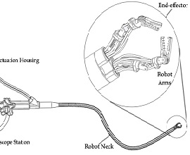

Hi I'm Zach Lyu
Welcome to my personal page.
I am a software engineer with a focus in computational healthcare. I am passionate about improving the quality of life through technology.
I know both sides of the story. I am well exposed to the data features, methodologies, and physiology in common need-based clinical settings. At the same time, I have strong coding skills in C++/Python/Java and experiences in deep learning, allowing me to implement the clinical visions.
I will graduate from the Master of Engineering program of UC Berkeley in May 2019. I'd like to share with you some of my projects that I found very interesting.
Recent Work
-
NLP & Information Extraction
from Clinical Notes [UCSF Bakar]
(Python)Natural Language Processing
Machine Learning
(Ongoing) -
Prediction of Individual Brain Ages
from MRI 3d Datasets
(Python)Deep Learning
Convolutional Neural Network
Image Processing -
Developing a
Pulse Oximter Prototype
(C++)Signal Processing
Arduino/PCB/3D Printing
Prototype Design -
 CT Image Reconstruction using
CT Image Reconstruction using
fourier filtered backprojection
(Matlab)Medical Image Processing
Computational Tomography
Radon Transform -
Investigating Trajectories of
Actin-based Motility
(MATLAB)Image Processing
3D Data Analysis -
Maintaining a
Medical Monitor Software
(C++) Intern
Software Maintenance -
Developing a Chinese Poker Game
with GUI and Networkng
(Java)OO Design
Multi-threading
Java Swing -
 A Web-crawler of Hyper-texual
A Web-crawler of Hyper-texual
data about Game of Thrones
(Python)Information Extraction
Data Analysis -
Developing an algorithm to
determine arterial indexes
(MATLAB)Oscillometric Method
Blood Pressure Measurement
Signal Processing -
Volume Measurement by
ultrasound and MRI
(MATLAB)Doppler Equation
Image Processing -
Preprocessing MRI
3D Brain Images
(Python)Numpy Library
Image Processing
Additional
-
Group Lead:
Organizing Charity Work in Ghana, AfricaNegotiating with NGOs
Managing and allocating funds
Administered Construction of latrines -

Soft Robotic Research:
endoscopic surgical robot
(SolidWorks; Simulink)Testing computerization
Model and simulation
-
Assisting in abdominal, pelvic,
intracranial, cardiac MRI imaging
(Siemens 1.5T & 3T)Coordination with physicians
and radiologists
Service Engineer Intern